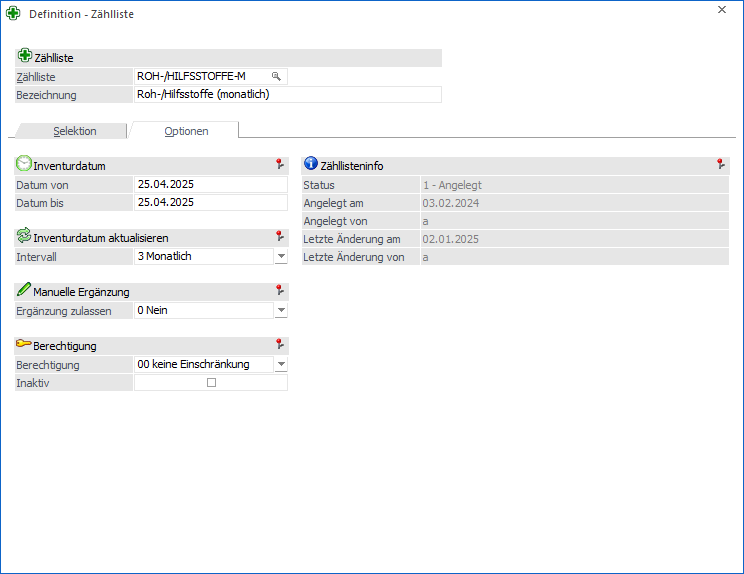
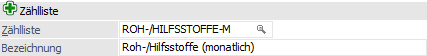
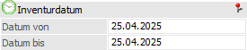
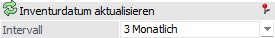
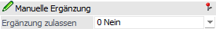
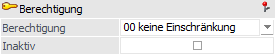
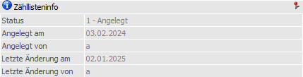

In dem Register "Optionen" werden grundsätzliche Einstellungen für die Zählliste (z.B. Inventurzeitraum) definiert.
Achtung
Bei Zähllisten mit dem Status "2 - Bearbeitet" können folgende Eingabefelder geändert werden:
ü Intervall
ü Ergänzung zulassen
ü Berechtigung
ü Inaktiv
Bei Zähllisten mit dem Status "3 - Gebucht" kann folgendes Eingabefeld geändert werden:
ü Inaktiv

Folgende Eingabefelder stehen zur Verfügung:
Zählliste

Ø Zählliste
An dieser Stelle wird die Nummer bzw. das Kürzel der Zählliste hinterlegt. Dieses wird weiterer Folge in der Inventur als Auswahlkriterium angezeigt.
Ø Bezeichnung
Hier kann eine 200stellige Bezeichnung für die Zählliste hinterlegt werden.
Hinweis
Wurden bereits Zählliste definiert, so kann mit Hilfe der Taste F9 eine Kopie einer bestehenden Liste erzeugt werden.
Inventurdatum

Ø Datum von / bis
An dieser Stelle wird der Zeitraum der Inventur hinterlegt. Während der Inventurerfassung ist es nur möglich Erfassungszeilen innerhalb dieses Bereichs zu erfassen. Alle Erfassungen dieses Zeitraums werden pro Artikel summiert und bei Ausgabe der Differenzliste oder dem Buchen mit der SOLL-Menge verglichen.
Achtung
Die Differenzberechnung (IST-Erfassung zu SOLL-Menge) erfolgt immer aufgrund des Felds "Datum von"! Gleiches gilt für das Buchungsdatum der Inventur.
Inventurdatum aktualisieren

Ø Intervall
An dieser Stelle kann ein Intervall für die Zählliste hinterlegt werden, wobei folgende Varianten zur Verfügung stehen:
ü 0 -Nie
ü 1 - Täglich
ü 2 - Wöchentlich
ü 3 - Monatlich
ü 4 - Jährlich
Nach dem Buchen der Zählliste kann der Inventurzeitraum um den hinterlegten Intervall automatisch erhöht werden. Hierbei wird der Status der Zählliste von "3 - Gebucht" auf "1 - Angelegt" geändert.
Sollte die Meldung nach dem Buchen mit "Nein" bestätigt werden, so wird die Abfrage bei dem Aufruf der Zählliste in der "Definition - Zählliste" wiederholt.
Hinweis
Aufgrund des Intervalls sind nur entsprechend passende Eingaben im Inventurdatum möglich.
Manuelle Ergänzung

Ø Ergänzung zulassen
Mit Hilfe der Auswahlliste kann definiert werden, ob die Zählliste während der Erfassung um weitere Artikel bzw. Lagerorte ergänzt werden darf.
ü 0 - Nein
Die Zählliste darf
nicht ergänzt werden.
ü 1 - Zur Selektion passende (außer
Artikel)
Die Zählliste kann während der Inventurerfassung ergänzt werden.
Hierbei greifen weiterhin alles Selektionen, außer "Artikel von / bis" und
"Merkliste".
ü 2 - Alle
Die Zählliste kann
während der Inventurerfassung - ohne Einschränkung - ergänzt werden.
Berechtigung

Ø Berechtigung
Für jede Zählliste kann ein Berechtigungsprofil vergeben werden. Bei dem Laden von Zähllisten wird geprüft, ob der Anwender einer Benutzergruppe zugeordnet wurde, welche in dem jeweiligen Profil enthalten ist und ob somit eine Bearbeitung bzw. Nutzung erlaubt wäre (nähere Informationen entnehmen Sie bitte dem WinLine ADMIN - Handbuch).
Hinweis
Benutzern des Typs "Administrator" oder mit der Administratorenberechtigung "Benutzeradministrator" steht in der Auswahlbox der Punkt ">> Neues Profil" zur Verfügung. Über die Anwahl dieses Eintrags kann in der Folge ein neues Berechtigungsprofil angelegt werden.
Ø Inaktiv
Durch Aktivierung dieser Optionen wird die Zählliste auf inaktiv gesetzt. Dadurch steht diese in der Inventur und dem Inventur EXIM nicht mehr zur Verfügung.
Zähllisteninfo

Ø Status
An dieser Stelle wird der Status der Zählliste angezeigt. Folgende Varianten sind hierbei möglich:
ü 1 - Angelegt
Die Zählliste
wurde bisher "nur" angelegt.
ü 2 - Bearbeitet
Sobald eine Inventurerfassung aufgrund der
Zählliste vorhanden ist, wird der Status "2 - Bearbeitet" angezeigt.
ü 3 - Gebucht
Die Zählliste wurde
in der Inventur verbucht.
Ø Angelegt am
An dieser Stelle wird das Datum der Anlage ausgewiesen.
Ø Angelegt vom
In diesem Feld wird der Benutzer der Anlage angezeigt.
Ø Letzte Änderung am
An dieser Stelle wird das Datum der letzten Änderung ausgewiesen.
Ø Letzte Änderung von
In diesem Feld wird der Benutzer der letzten Änderung angezeigt.